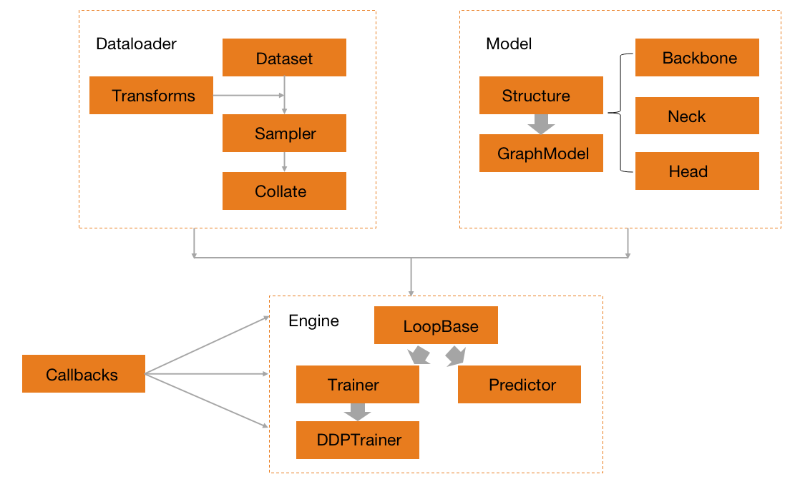

框架¶
HAT核心模块¶

上图为HAT框架的整体组织的抽象流程图，可以看到HAT是的训练和验证流程由四大核心模块组成的，分别为Data，Model，Callback，Engine。这里先分别简单地介绍一下这些核心模块。
Data负责HAT中所有的数据生产流程，包括负责迭代输出的Dataset，负责各项任务数据增强的Transforms，负责数据串联和打包batch的Collate，以及负责数据采样流程的Sampler。所有的数据生产流程最终通过Dataloader的接口统一的组织起来。
Model负责HAT中所有模型的搭建流程。在HAT中，模型一般分为backbone，neck，head或者task module等子模块，由统一的structure来负责串联所有的子模块完成搭建最终的模型。structure中除了有常见的任务之外，还有GraphModel专门用来处理多任务相关的模型结构搭建。
Engine主要负责训练或者预测的流程搭建和执行，其中训练的模块为Trainer，预测的模块为Precitor。所有的其他模块，如Data，Model，Callback等都会在构建完成之后输入到Engine中来，由Engine统一调度，完成训练或者预测的全部流程。
Callback负责在Engine执行的过程中，来动态调整训练状态的模块。其定位类似于Torch中模型的Hooks，可以在不修改Engine代码的情况下，根据Engine提供的训练状态，在指定的可修改位置上动态的调整。整个Engine的可修改位置主要包括：on_loop_begin(end)，on_epoch_begin(end)，on_step_begin(end)，on_batch_begin(end)。
除了核心的四大模块之外，还有其他一些辅助的模块，如Profiler，Metric，Visualize等。其中Profiler作为HAT的prof工具，主要用来辅助定位训练或者验证过程中出现的速度瓶颈。Metric主要用来做数据集训练或者测试过程中的指标验证，它其实是Model的一种特殊情况，和具体的数据集强绑定。Visualize主要是用来完成相关数据集的可视化工作。
HAT构建训练流程¶
针对任意一个数据集，构建
Data需要的所有子模块。首先搭建用于迭代输出的Dataset，在迭代输出中通过Transform对数据进行处理，最常见的就是训练中的数据增强操作，测试中的数据预处理等。通过Sampler采样器控制Dataset的输出顺序，最终用Collate逐个串联，并最终完成一个Batch训练数据的打包。由DataLoader统一完成所有流程调度，并将Batch的训练数据作为结构，输入到训练流程中。针对任意一个模型，构建
Model所需要的所有子模块，如Backbone，Neck等。使用Structure将所有的子模块串联在一起，形成一个完整的带训练状态的模型，这个模型也将作为训练对象输入到训练流程中。针对训练的任务，选择或者定义合适的
Callback来动态调整训练过程中的训练状态。如在每次训练中定时输出训练的结果，或者每次训练中动态调整训练的学习率。虽然Callback的定义和Engine是分开的，但执行流程是嵌入到Engine的完整流程中。针对训练的环境，构建合适的
Engine作为训练引擎。如常见的多卡训练环境可以选择DistributedDataParallelTrainer或者DataParallelTrainer。Engine可以将所有已经构建的模块，包括Data,Model，或者其他模块如Callback，Metric，Profiler统一的组织在一起，完成训练所需要全部环境的初始化。需要注意的是，Engine里面的模块并不是所有的都是必须的。最后，统一使用选择好的
Engine中的fit接口，完成训练的全部流程。
以上就是HAT框架的整体结构和训练的抽象流程，本节开始的图不仅仅反应了构建的数据流，同时也包括模块和模块之间的调用关系。对于训练而言，最核心的部分应该就是Engine，全面理解Engine的运行流程，也就可以理解整个HAT的数据流。